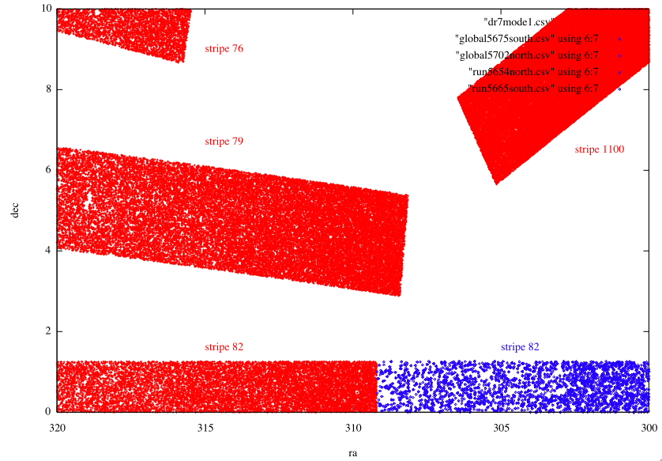
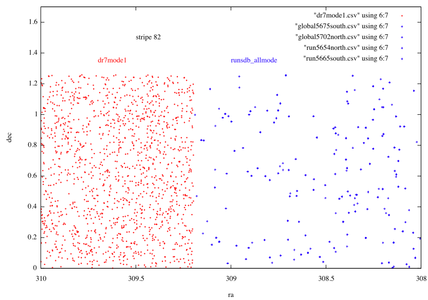

Select p.run,p.rerun,p.camcol,p.field,p.obj,p.ra,p.dec,g,mode,p.status,stripe,strip
From Photoobjall p,field f,segment s
Where
Ra between 320 and 300 and
Dec between 0 and 10 and
G between 18 and 18.2 and
p.fieldid = f.fieldid and f.segmentid = s.segmentid
(and mode=1 for the context dr7)
$11 == 82 && (( $1 == 5654 && $12 == 0 ) || ( $1 == 5665 && $12 == 1 ) || ( $1 == 5675 && $12 == 0 && ( $4 < 70 && $4 > 44) ) || ( $1 == 5702 && $12 == 1 && ( $4 < 123 && $4 > 108 ) ) )
We can make a zoom to understand better what happen here.
